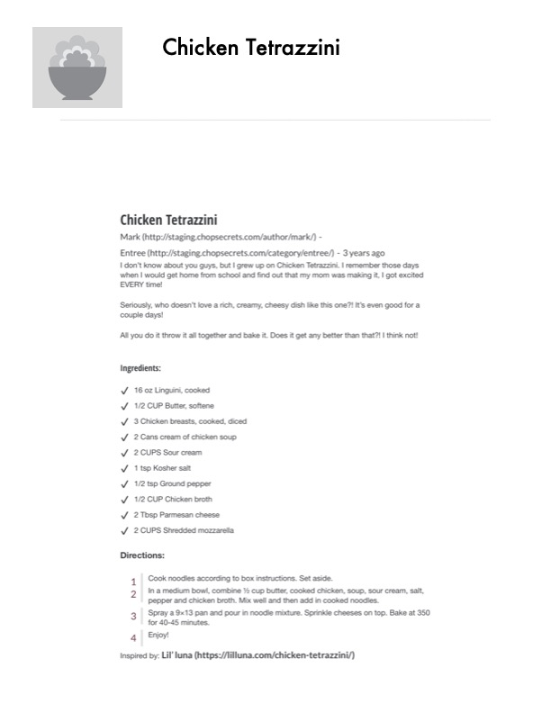

Chicken Tetrazzini

Original cookbook page 32
A rich, creamy, cheesy dish that's perfect for weeknight dinners. All you do is throw it all together and bake it. Great for leftovers too!
Cook: 40-45 minutes
Ingredients
- 16 oz linguini, cooked
- 1/2 cup butter, softened
- 3 chicken breasts, cooked, diced
- 2 cans cream of chicken soup
- 2 cups sour cream
- 1 tsp kosher salt
- 1/2 tsp ground pepper
- 1/2 cup chicken broth
- 2 tbsp Parmesan cheese
- 2 cups shredded mozzarella
Instructions
- Cook noodles according to box instructions. Set aside.
- In a medium bowl, combine ½ cup butter, cooked chicken, soup, sour cream, salt, pepper and chicken broth. Mix well and then add in cooked noodles.
- Spray a 9×13 pan and pour in noodle mixture. Sprinkle cheeses on top. Bake at 350°F for 40-45 minutes.
- Enjoy!
Recipe #32 from collection